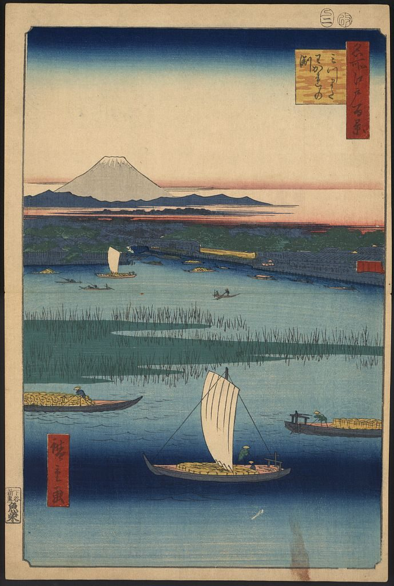

References / Illustration / 466
Hiroshige, Mitsumata Wakarenofuchi
Cargo boats cross the Sumida River below a distant Mount Fuji, under a sky that fades from Prussian blue at the top and a river that darkens at the bottom: bokashi at both ends of the sheet.
- Source
- Library of Congress, Prints and Photographs Division, FP 2 - JPD, no. 1300, p. 14
- Creator
- Utagawa Hiroshige (catalogued by the Library of Congress as Andō Hiroshige)
- Made
- [1857]
- Style
- Ukiyo-e (agent-proposed, not yet reviewed by a person)
- Moods
- Calm, open, atmospheric
- Evidence
- Downloaded and inspected the Library of Congress reference JPEG (689 × 1024 px, the largest JPEG offered). This impression is mounted in the album Gajō icchō, p. 14 (Donald D. Walker collection). A brown stain is visible at lower right.
- Reviewed
- Rights
- Open license, stored. License: public domain. Rights policy
Context
The Library of Congress catalogues the print as a color woodcut, 36.3 × 24.1 cm, vertical ōban nishiki-e, [1857], from the series One Hundred Famous Views of Edo (Meisho Edo hyakkei). LoC 2009631870.
The record summary: barges on the waterways near Edo, with Mount Fuji in the distance. LoC.
Observed
- The sky fades from a dark Prussian-blue band at the top into pale cream, then into a pink band at the horizon.
- The river is flat pale blue in the middle and darkens to deep blue along the bottom edge.
- Mount Fuji is a flat gray cone with a white cap, small, left of center, on a dark blue ridge.
- A band of green reeds crosses the river as a flat shape with thin black blade lines.
- A sailboat with a cream sail sits low and right of center. Other boats are cut by the left and right edges.
- A red vertical series cartouche with a yellow title panel is at upper right. A red signature cartouche is at lower left.
- A thin black frame line runs around the picture inside a cream paper margin.
Why it belongs
The print shows the two standard bokashi places, the top of the sky and the bottom of the water, in one image. The rest of the picture is flat.
The calm horizontal bands of sky, land, reeds, and water are typical of Hiroshige’s late landscapes.
Borrow
Fade the top of a header from deep blue into the page color, and fade the bottom of a footer the same way.
Stack calm horizontal bands of flat color, and break them with one vertical element.
Measured
Machine-extracted by tools/image-traits.py on . Full measurement.
- Mean chroma
- 0.16
- Palette
- #859891 17%
- #dec49d 14%
- #d6b991 10%
- #445357 10%
- #19263f 7%
- #3d484a 5%
- #708685 4%
- #232221 3%

